11 月 6 日 · 三种校准对比：线上模型 / 在线校准 / 新模型 v7
每趟三行：线上模型（v3）是现在线上的模型校准；在线校准＋设备变动复核是规则校准并打开复核；新模型 v7是补了 10/7 以后数据重训、云端不做长时融合的版本。三种都关掉了「校准替换」。绿色实线左脚，蓝色虚线右脚。
大弯左右差：只看立刃 ≥60° 的大弯，每个弯在弯顶前后 0.4 秒内左右脚各取立刃极值，算两脚差多少度，前刃、后刃分开取中位数。两只脚在同一块板上，越接近 0 越好；绿色 ≤4°，黄色 4~7°，红色 >7°。
每人汇总（各趟中位，前刃 / 后刃）| 滑手 | 线上模型（v3） | 在线校准＋设备变动复核 | 新模型 v7（去融合） |
|---|
| RIM | 12.0° / 7.5° | 4.7° / 2.8° | 4.2° / 3.0° |
| ShanKs | 3.4° / 7.4° | 5.2° / 6.2° | 2.6° / 3.5° |
| Feng Tao | 7.0° / 6.1° | 3.9° / 2.8° | 4.3° / 3.3° |
| 粒一 | 10.4° / 4.9° | 2.8° / 2.3° | 4.1° / 2.8° |
| 嘉嘉 | 2.2° / 4.3° | 3.3° / 2.6° | 1.8° / 3.8° |
| Vacant小星 | 5.7° / 1.2° | 5.5° / 3.6° | 4.7° / 2.5° |
| Lychee | 12.6° / 1.2° | 29.2° / 3.4° | 10.9° / 9.9° |
RIM
第 1 趟
线上模型（v3）前刃 12.6°（4弯）后刃 11.0°（5弯）
在线校准＋设备变动复核前刃 25.3°（4弯）后刃 30.8°（4弯）
新模型 v7（去融合）前刃 3.9°（4弯）后刃 2.0°（5弯）
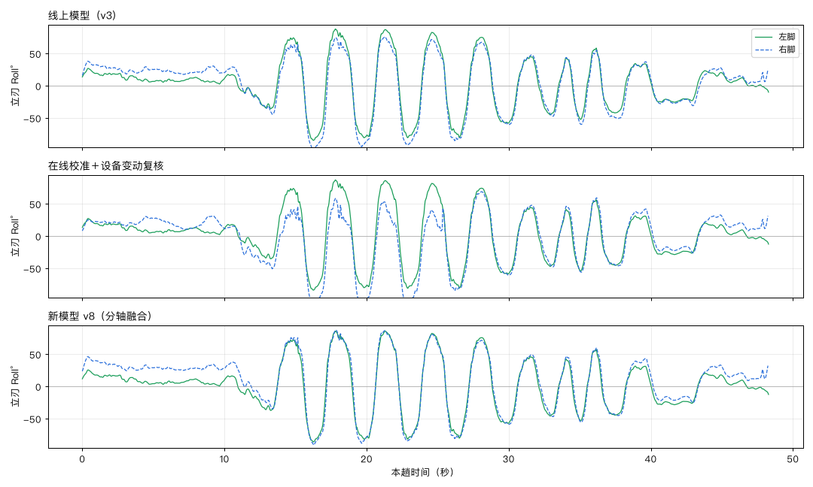
第 2 趟
线上模型（v3）前刃 11.6°（6弯）后刃 12.2°（4弯）
在线校准＋设备变动复核前刃 2.9°（6弯）后刃 1.9°（4弯）
新模型 v7（去融合）前刃 2.7°（6弯）后刃 2.1°（4弯）
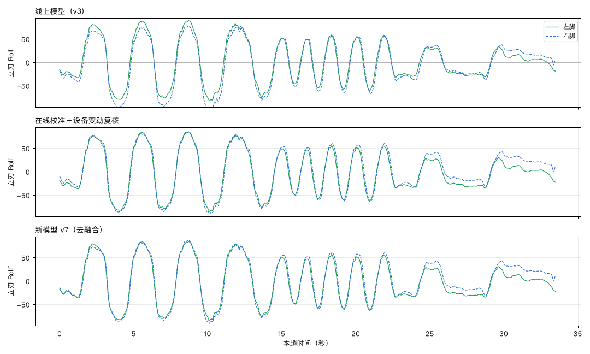
第 3 趟
线上模型（v3）前刃 10.9°（7弯）后刃 6.4°（6弯）
在线校准＋设备变动复核前刃 5.5°（7弯）后刃 2.3°（6弯）
新模型 v7（去融合）前刃 5.2°（7弯）后刃 2.3°（6弯）
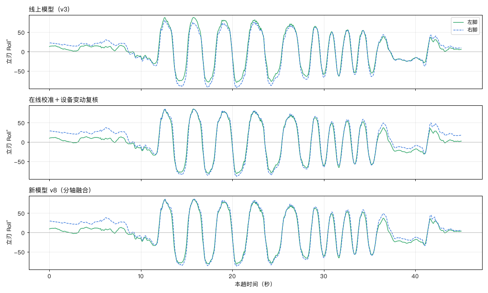
第 4 趟
线上模型（v3）前刃 11.2°（7弯）后刃 6.5°（6弯）
在线校准＋设备变动复核前刃 7.2°（7弯）后刃 0.8°（6弯）
新模型 v7（去融合）前刃 4.8°（7弯）后刃 3.1°（6弯）
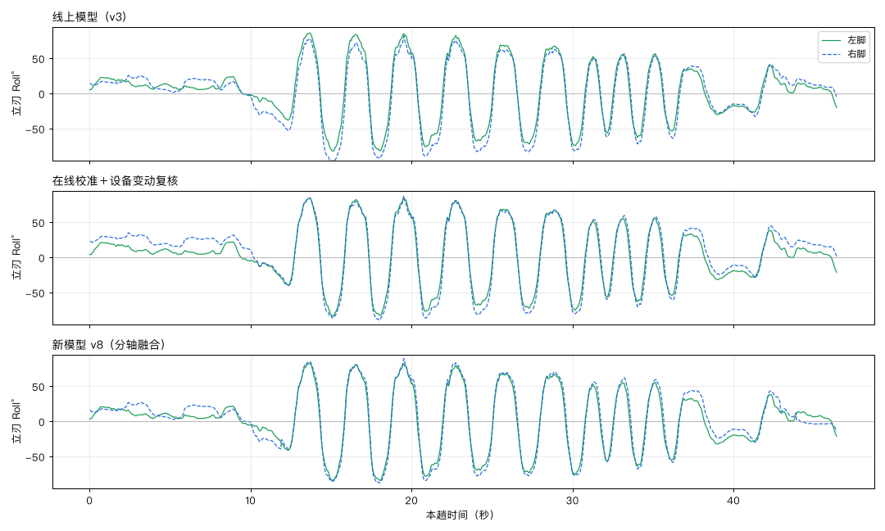
第 5 趟
线上模型（v3）前刃 14.8°（3弯）后刃 9.0°（4弯）
在线校准＋设备变动复核前刃 3.0°（3弯）后刃 0.8°（4弯）
新模型 v7（去融合）前刃 2.7°（3弯）后刃 2.6°（4弯）
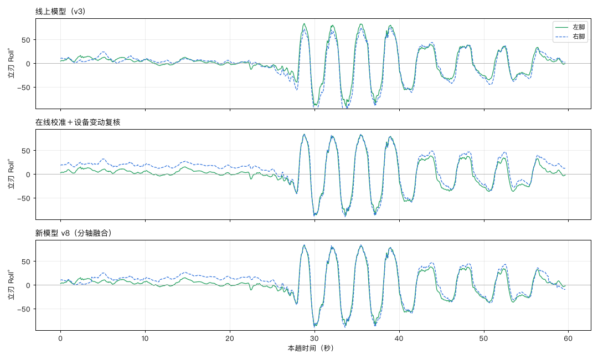
第 6 趟
线上模型（v3）前刃 18.1°（3弯）后刃 10.1°（4弯）
在线校准＋设备变动复核前刃 3.3°（3弯）后刃 1.9°（4弯）
新模型 v7（去融合）前刃 4.5°（3弯）后刃 3.6°（3弯）
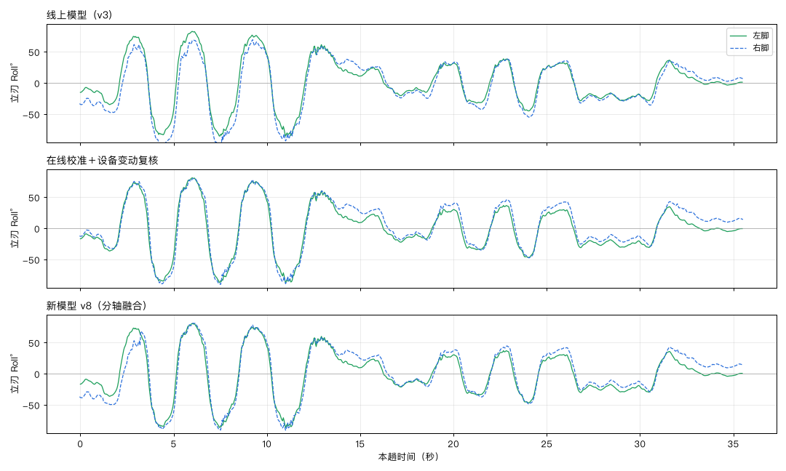
第 7 趟
线上模型（v3）前刃 12.4°（5弯）后刃 6.7°（4弯）
在线校准＋设备变动复核前刃 1.8°（4弯）后刃 4.8°（6弯）
新模型 v7（去融合）前刃 5.1°（5弯）后刃 3.2°（6弯）
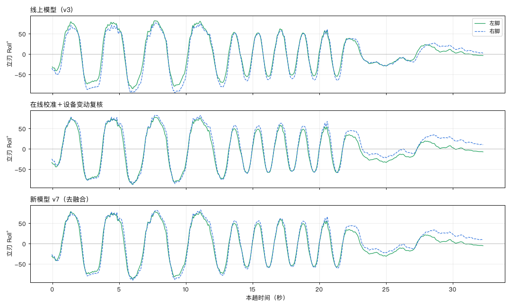
第 8 趟
线上模型（v3）前刃 11.8°（5弯）后刃 6.6°（4弯）
在线校准＋设备变动复核前刃 5.3°（4弯）后刃 0.5°（4弯）
新模型 v7（去融合）前刃 3.8°（4弯）后刃 1.0°（4弯）
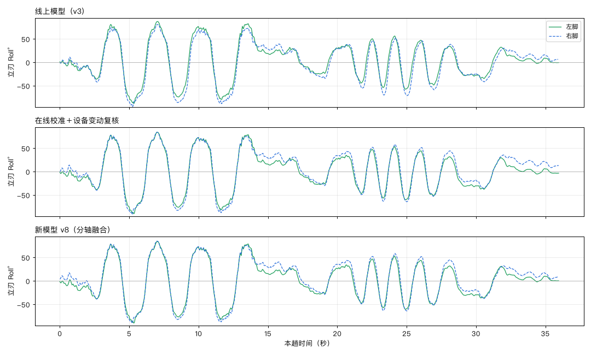
第 9 趟
线上模型（v3）前刃 11.5°（6弯）后刃 5.6°（1弯）
在线校准＋设备变动复核前刃 4.8°（2弯）后刃 3.3°（3弯）
新模型 v7（去融合）前刃 1.2°（1弯）后刃 5.7°（5弯）
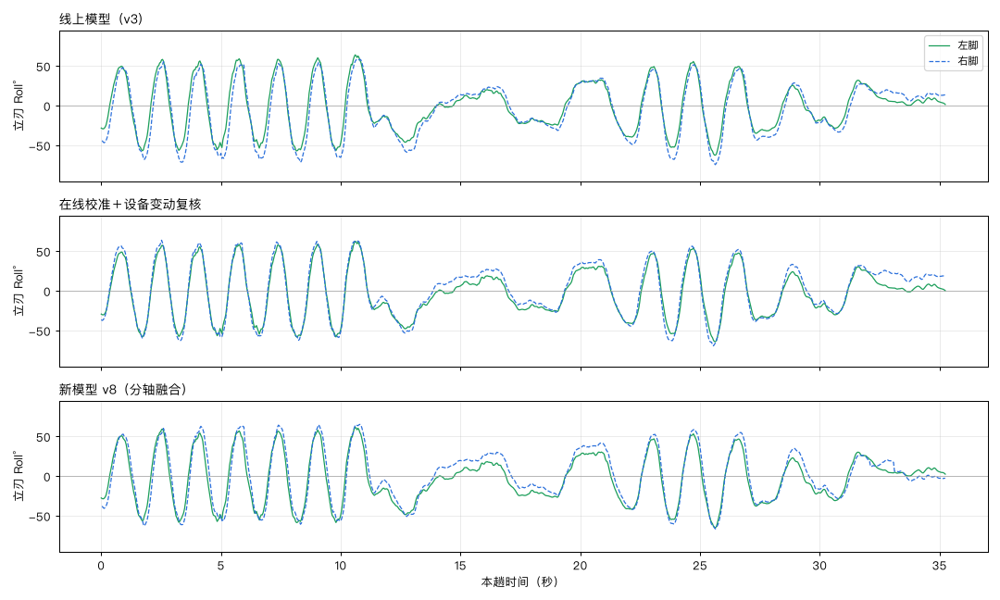
第 10 趟
线上模型（v3）前刃 29.5°（4弯）后刃 24.0°（2弯）
在线校准＋设备变动复核前刃 9.1°（4弯）后刃 5.6°（4弯）
新模型 v7（去融合）前刃 5.5°（4弯）后刃 2.5°（4弯）
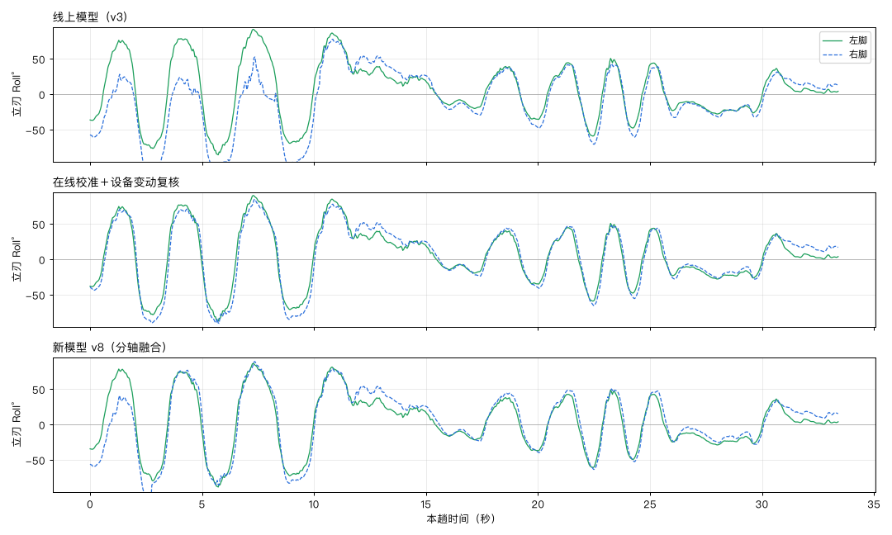
第 11 趟
线上模型（v3）前刃 14.2°（10弯）后刃 8.3°（1弯）
在线校准＋设备变动复核前刃 3.5°（4弯）后刃 5.8°（9弯）
新模型 v7（去融合）前刃 2.8°（6弯）后刃 5.2°（4弯）
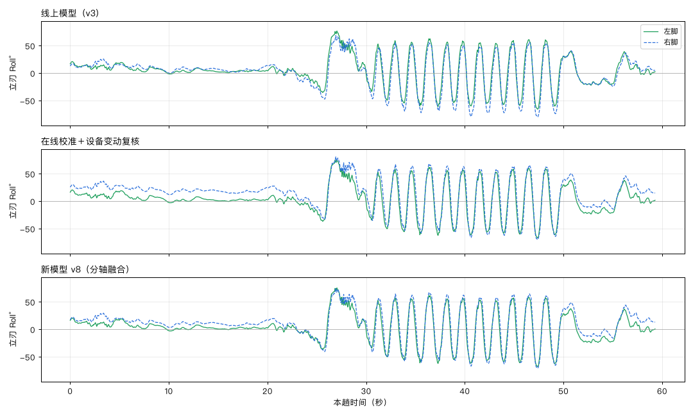
第 12 趟
线上模型（v3）前刃 11.4°（6弯）后刃 5.8°（4弯）
在线校准＋设备变动复核前刃 2.8°（5弯）后刃 6.6°（4弯）
新模型 v7（去融合）前刃 3.3°（4弯）后刃 3.7°（4弯）
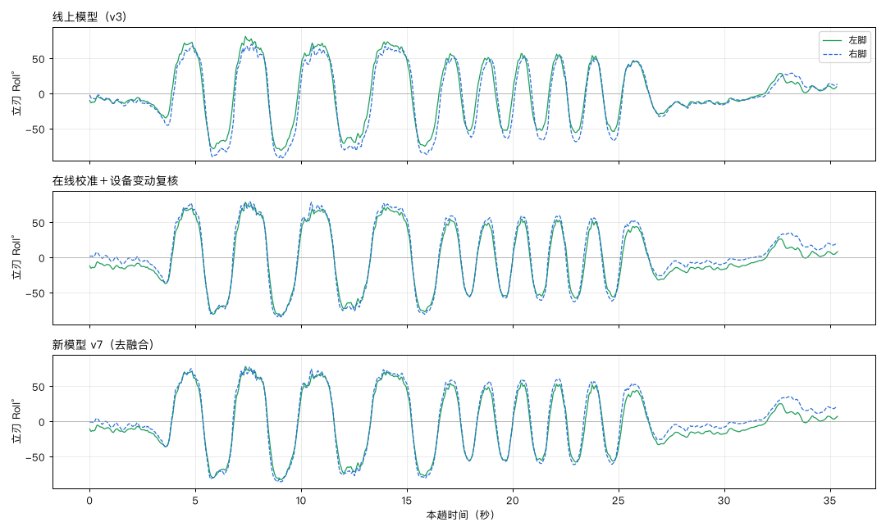
第 13 趟
线上模型（v3）前刃 11.0°（5弯）后刃 18.1°（7弯）
在线校准＋设备变动复核前刃 3.1°（7弯）后刃 4.0°（6弯）
新模型 v7（去融合）前刃 1.9°（7弯）后刃 5.7°（6弯）
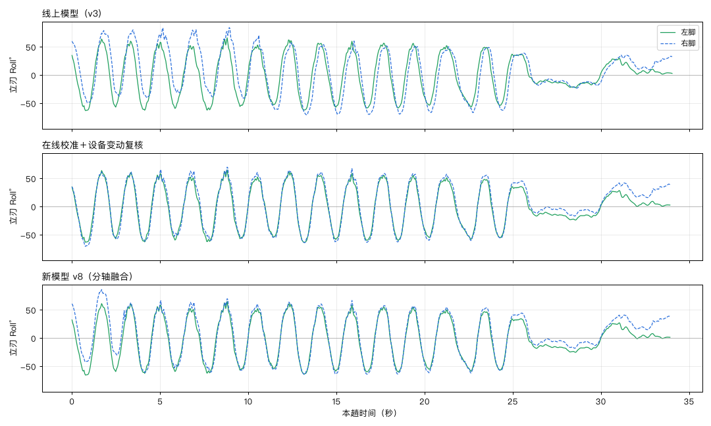
第 14 趟
线上模型（v3）前刃 12.2°（8弯）后刃 14.4°（4弯）
在线校准＋设备变动复核前刃 6.3°（7弯）后刃 1.6°（4弯）
新模型 v7（去融合）前刃 5.1°（8弯）后刃 1.4°（4弯）
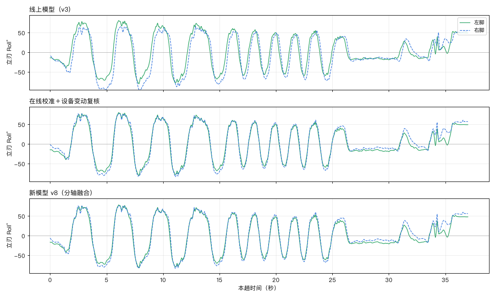
第 15 趟
线上模型（v3）前刃 5.9°（11弯）后刃 1.1°（2弯）
在线校准＋设备变动复核前刃 4.7°（4弯）后刃 9.6°（6弯）
新模型 v7（去融合）前刃 4.8°（7弯）后刃 6.3°（5弯）
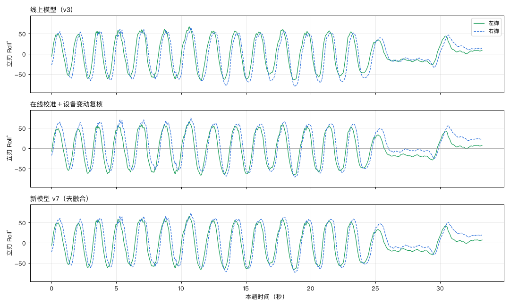
第 16 趟
线上模型（v3）前刃 17.4°（3弯）后刃 5.1°（4弯）
在线校准＋设备变动复核前刃 12.7°（3弯）后刃 1.7°（4弯）
新模型 v7（去融合）前刃 6.5°（3弯）后刃 2.9°（4弯）
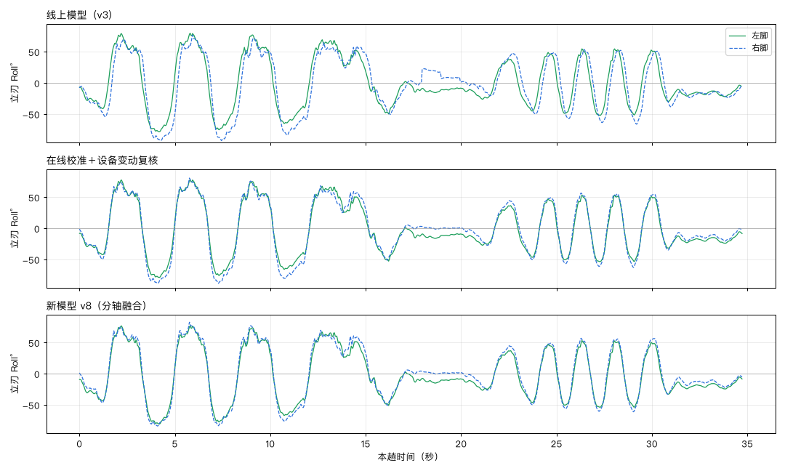
ShanKs
第 1 趟
线上模型（v3）前刃 1.4°（8弯）后刃 7.4°（9弯）
在线校准＋设备变动复核前刃 1.2°（8弯）后刃 6.2°（9弯）
新模型 v7（去融合）前刃 0.5°（8弯）后刃 5.4°（9弯）
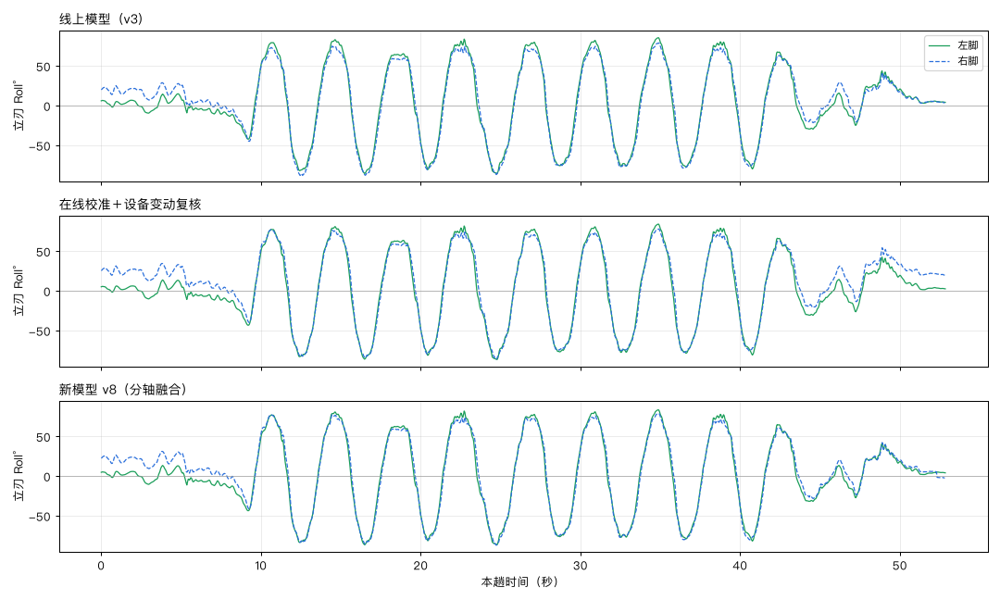
第 2 趟
线上模型（v3）前刃 5.8°（6弯）后刃 7.2°（7弯）
在线校准＋设备变动复核前刃 5.2°（6弯）后刃 3.7°（7弯）
新模型 v7（去融合）前刃 2.7°（6弯）后刃 3.5°（7弯）
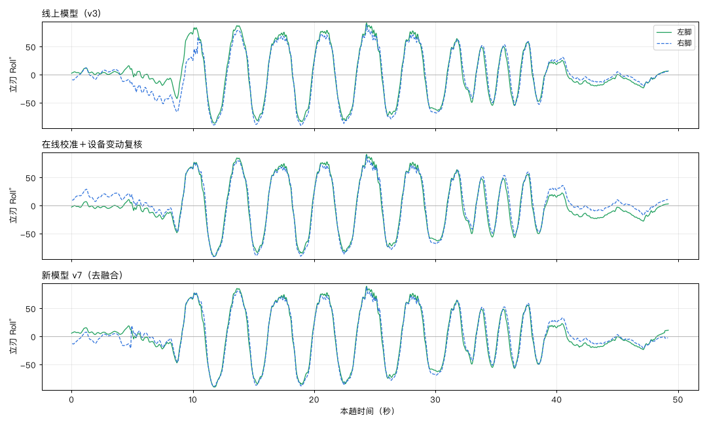
第 3 趟
线上模型（v3）前刃 6.6°（5弯）后刃 8.8°（4弯）
在线校准＋设备变动复核前刃 7.9°（5弯）后刃 8.2°（4弯）
新模型 v7（去融合）前刃 2.6°（5弯）后刃 3.7°（4弯）
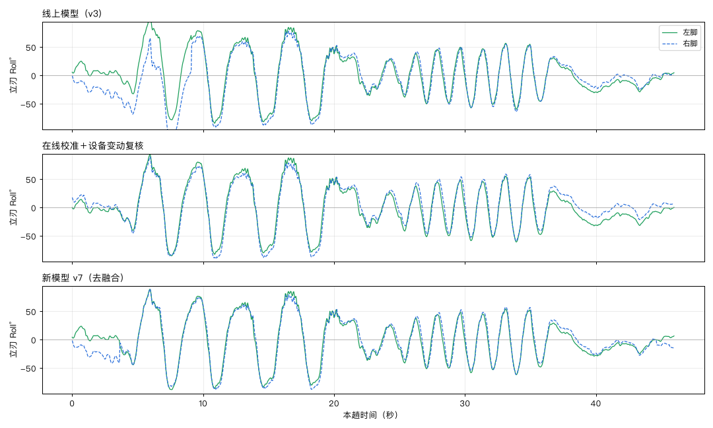
第 4 趟
线上模型（v3）前刃 3.2°（7弯）后刃 3.2°（5弯）
在线校准＋设备变动复核前刃 10.6°（7弯）后刃 12.7°（7弯）
新模型 v7（去融合）前刃 2.6°（7弯）后刃 5.4°（7弯）
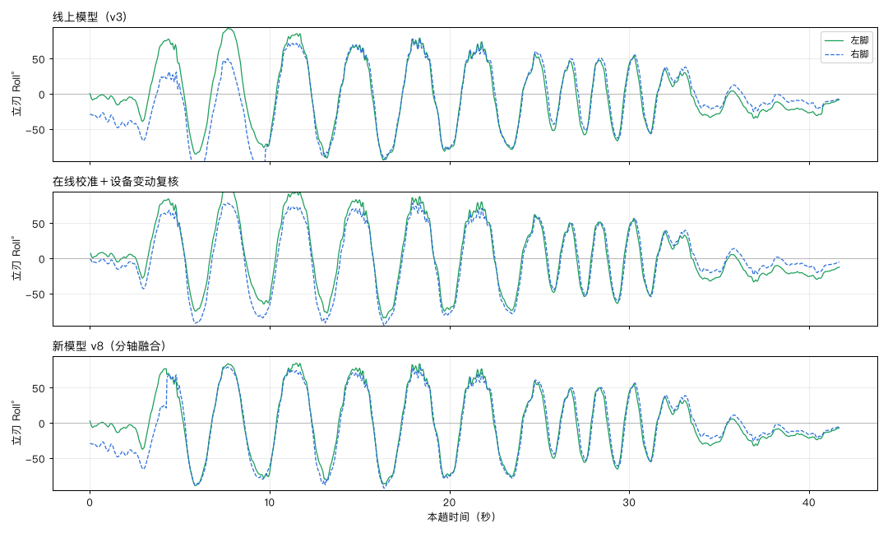
第 5 趟
线上模型（v3）前刃 3.2°（4弯）后刃 6.7°（4弯）
在线校准＋设备变动复核前刃 6.2°（4弯）后刃 6.3°（4弯）
新模型 v7（去融合）前刃 4.3°（4弯）后刃 3.0°（4弯）
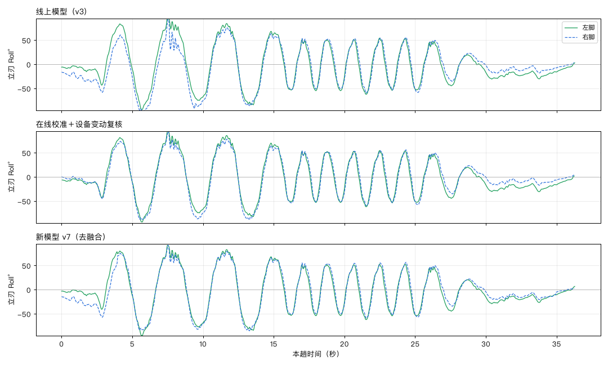
第 6 趟
线上模型（v3）前刃 2.9°（5弯）后刃 6.5°（5弯）
在线校准＋设备变动复核前刃 4.4°（5弯）后刃 4.4°（5弯）
新模型 v7（去融合）前刃 0.8°（5弯）后刃 4.5°（5弯）
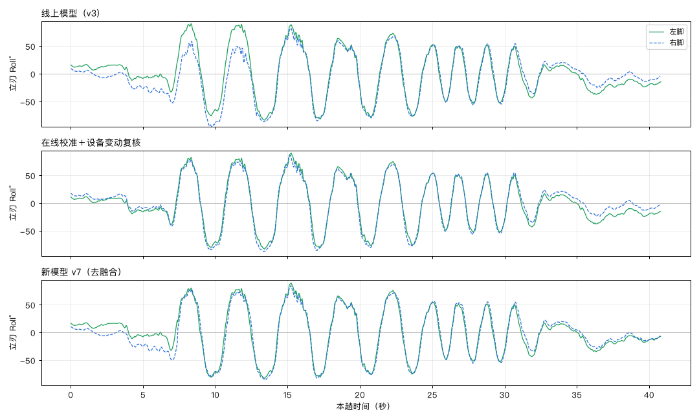
第 7 趟
线上模型（v3）前刃 5.7°（4弯）后刃 10.9°（5弯）
在线校准＋设备变动复核前刃 7.2°（4弯）后刃 7.4°（5弯）
新模型 v7（去融合）前刃 2.4°（4弯）后刃 3.2°（5弯）
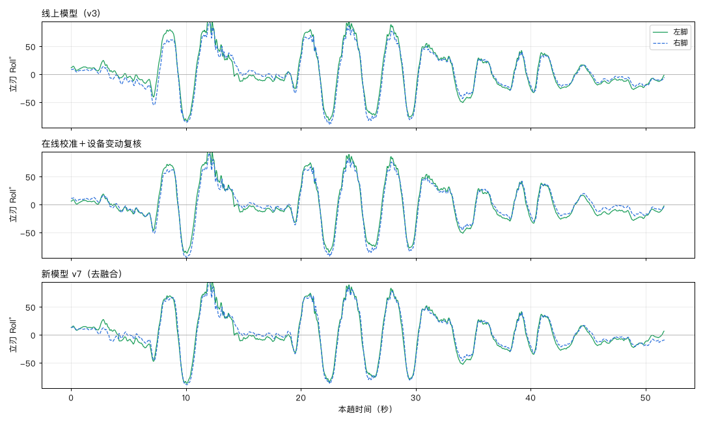
第 8 趟
线上模型（v3）前刃 32.6°（3弯）后刃 9.1°（4弯）
在线校准＋设备变动复核前刃 2.9°（4弯）后刃 3.4°（5弯）
新模型 v7（去融合）前刃 0.9°（3弯）后刃 3.5°（5弯）
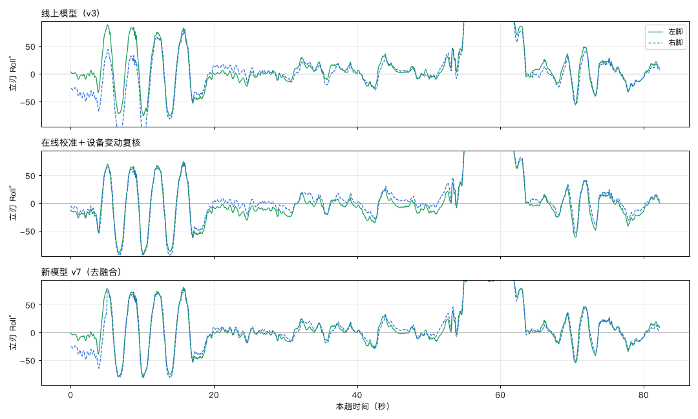
第 9 趟
线上模型（v3）前刃 3.4°（3弯）后刃 10.9°（4弯）
在线校准＋设备变动复核前刃 2.3°（3弯）后刃 2.5°（3弯）
新模型 v7（去融合）前刃 4.8°（1弯）后刃 3.4°（3弯）
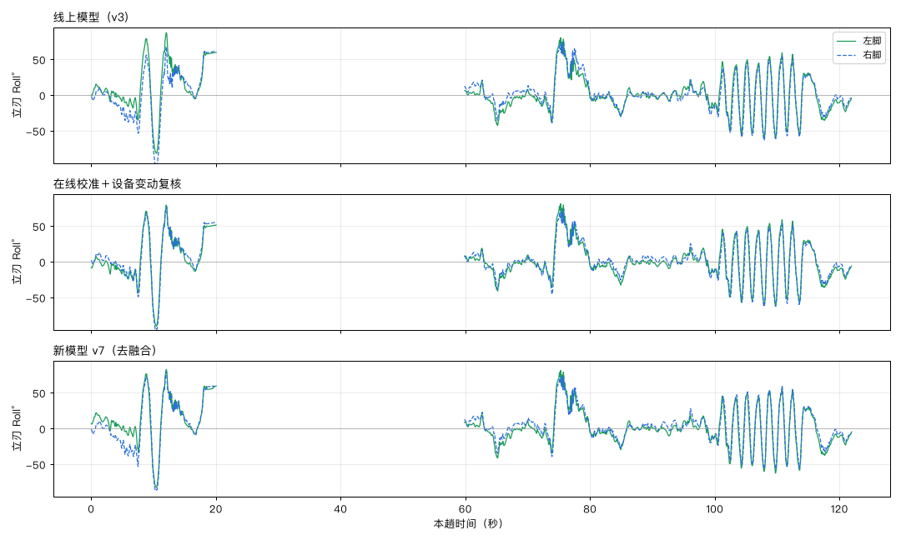
Feng Tao
第 1 趟
线上模型（v3）前刃 3.6°（7弯）后刃 5.1°（7弯）
在线校准＋设备变动复核前刃 6.2°（7弯）后刃 2.4°（8弯）
新模型 v7（去融合）前刃 5.3°（6弯）后刃 2.8°（8弯）
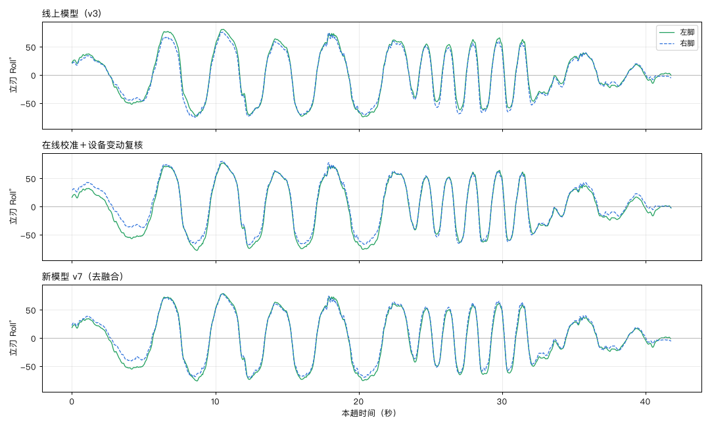
第 2 趟
线上模型（v3）前刃 8.2°（1弯）后刃无大弯
在线校准＋设备变动复核前刃无大弯后刃无大弯
新模型 v7（去融合）前刃 1.6°（1弯）后刃无大弯
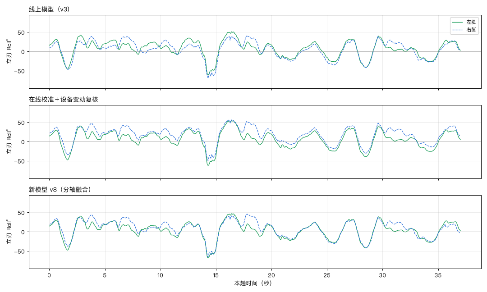
第 3 趟
线上模型（v3）前刃 8.7°（8弯）后刃 6.2°（7弯）
在线校准＋设备变动复核前刃 1.3°（8弯）后刃 2.3°（8弯）
新模型 v7（去融合）前刃 4.3°（8弯）后刃 2.9°（8弯）
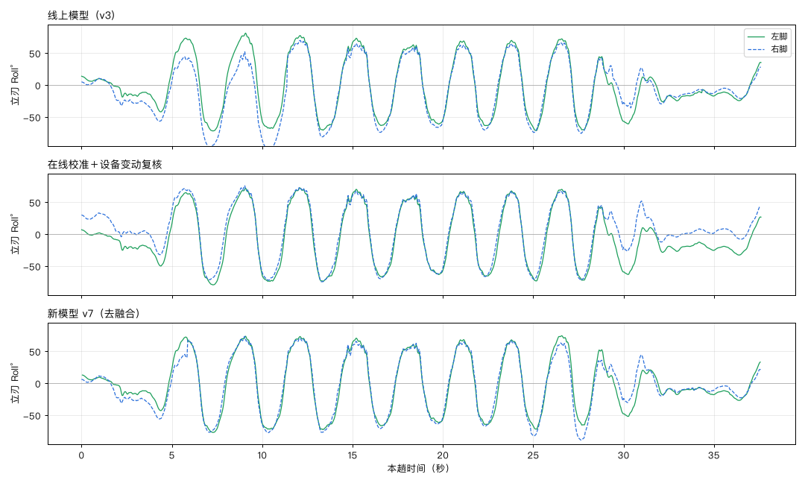
第 4 趟
线上模型（v3）前刃无大弯后刃无大弯
在线校准＋设备变动复核前刃无大弯后刃无大弯
新模型 v7（去融合）前刃无大弯后刃无大弯
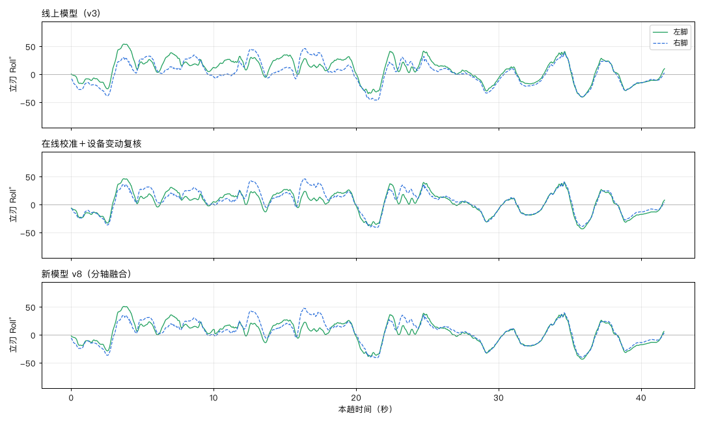
第 5 趟
线上模型（v3）前刃 7.9°（7弯）后刃 6.7°（6弯）
在线校准＋设备变动复核前刃 3.9°（7弯）后刃 3.5°（7弯）
新模型 v7（去融合）前刃 1.8°（7弯）后刃 0.8°（7弯）
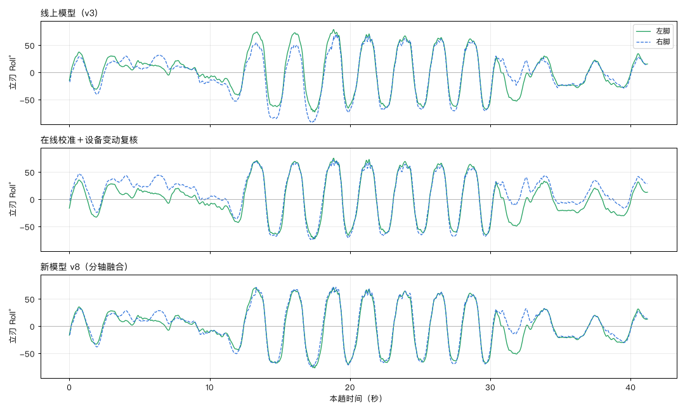
第 6 趟
线上模型（v3）前刃无大弯后刃无大弯
在线校准＋设备变动复核前刃无大弯后刃无大弯
新模型 v7（去融合）前刃无大弯后刃无大弯
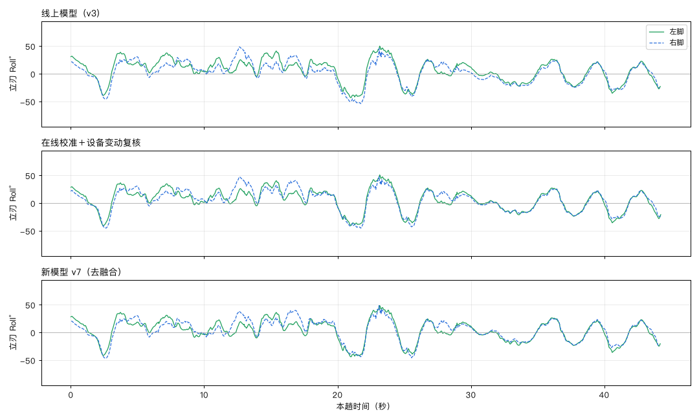
第 7 趟
线上模型（v3）前刃 3.1°（9弯）后刃 1.6°（6弯）
在线校准＋设备变动复核前刃 1.4°（8弯）后刃 2.5°（8弯）
新模型 v7（去融合）前刃 2.5°（9弯）后刃 2.8°（8弯）
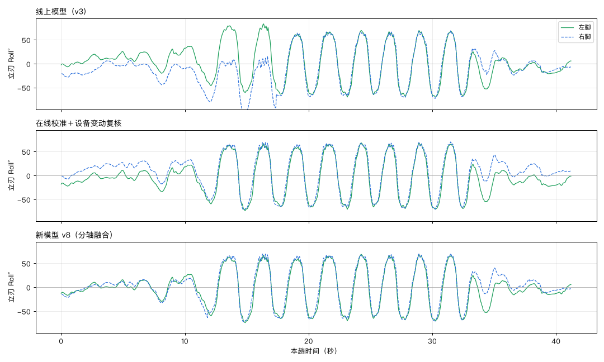
第 8 趟
线上模型（v3）前刃无大弯后刃无大弯
在线校准＋设备变动复核前刃无大弯后刃无大弯
新模型 v7（去融合）前刃无大弯后刃无大弯
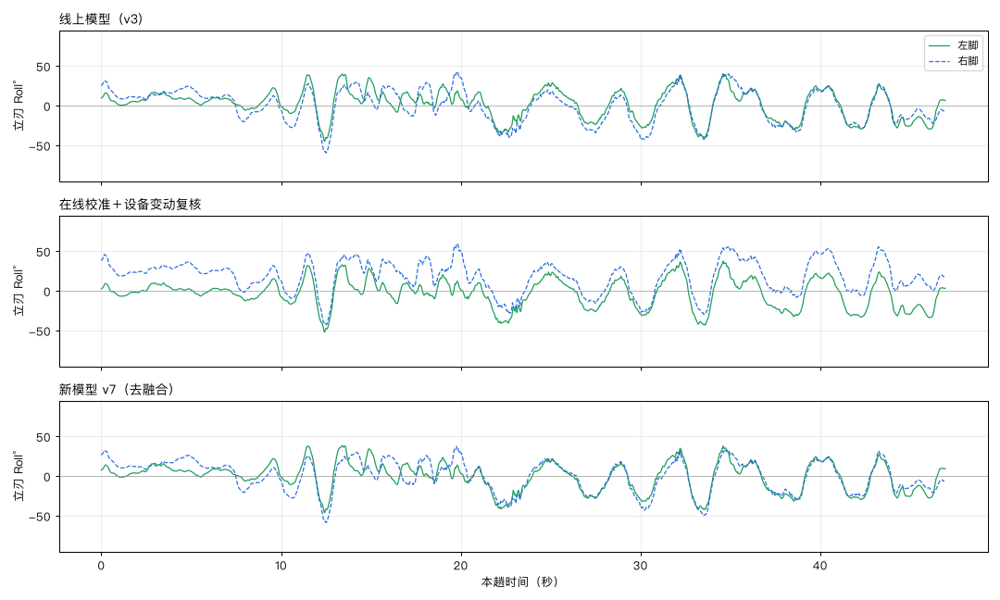
第 9 趟
线上模型（v3）前刃 5.1°（8弯）后刃 3.1°（7弯）
在线校准＋设备变动复核前刃无大弯后刃 20.8°（12弯）
新模型 v7（去融合）前刃 4.5°（7弯）后刃 8.1°（10弯）
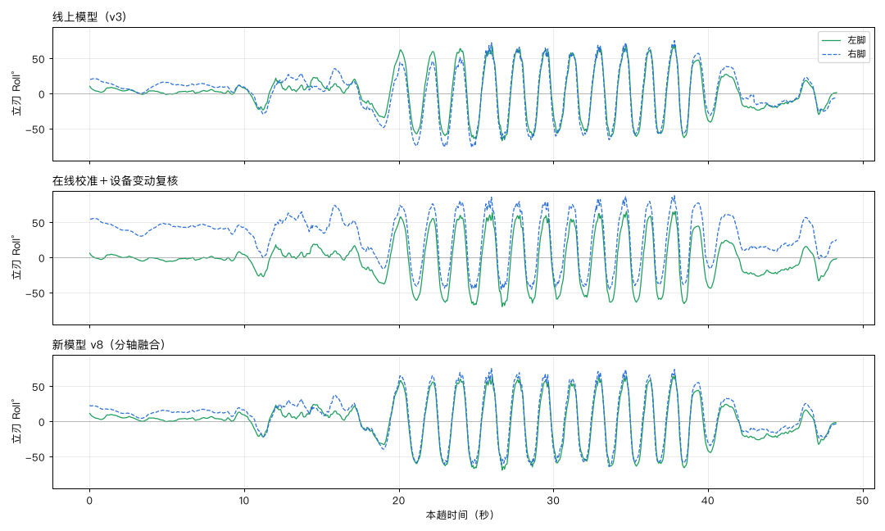
第 10 趟
线上模型（v3）前刃无大弯后刃无大弯
在线校准＋设备变动复核前刃无大弯后刃无大弯
新模型 v7（去融合）前刃无大弯后刃无大弯
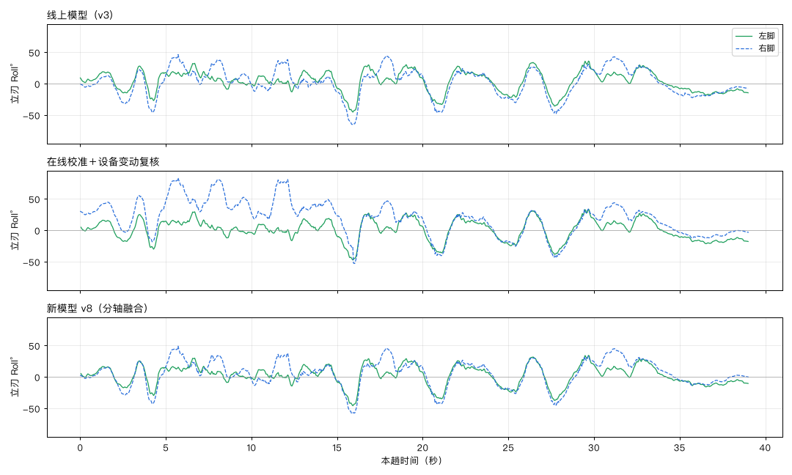
第 11 趟
线上模型（v3）前刃 3.6°（9弯）后刃 2.1°（10弯）
在线校准＋设备变动复核前刃 1.3°（9弯）后刃 8.2°（11弯）
新模型 v7（去融合）前刃 4.3°（9弯）后刃 8.0°（11弯）
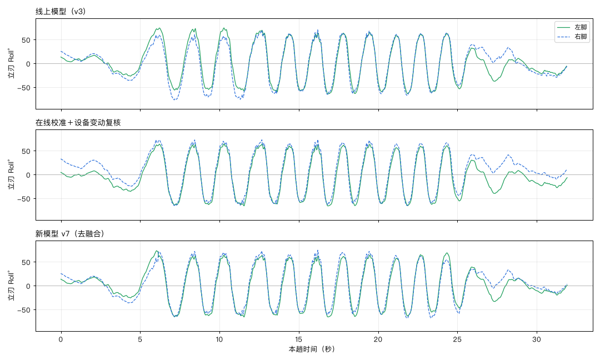
第 12 趟
线上模型（v3）前刃 6.1°（7弯）后刃 6.1°（5弯）
在线校准＋设备变动复核前刃 5.8°（6弯）后刃 3.0°（6弯）
新模型 v7（去融合）前刃 1.7°（6弯）后刃 1.4°（6弯）
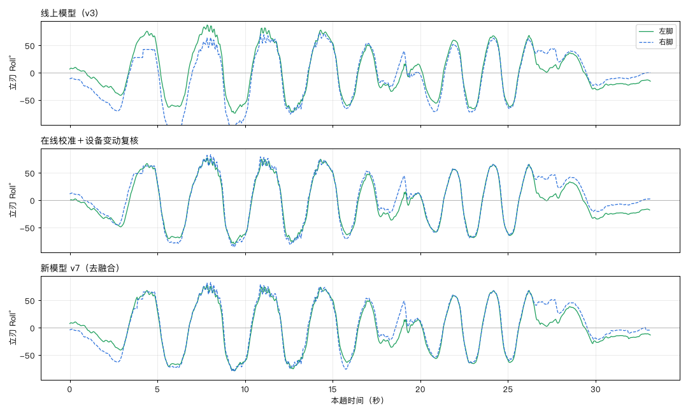
第 13 趟
线上模型（v3）前刃 26.2°（5弯）后刃 23.7°（5弯）
在线校准＋设备变动复核无结果
新模型 v7（去融合）前刃 9.5°（4弯）后刃 4.8°（3弯）
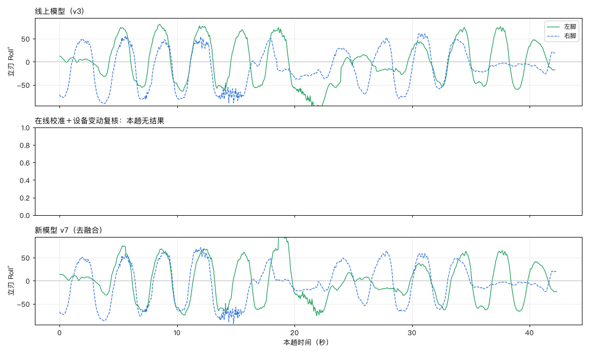
第 17 趟
线上模型（v3）前刃 30.7°（4弯）后刃 23.4°（2弯）
在线校准＋设备变动复核前刃 32.5°（4弯）后刃 29.1°（2弯）
新模型 v7（去融合）前刃 17.4°（4弯）后刃 9.7°（3弯）
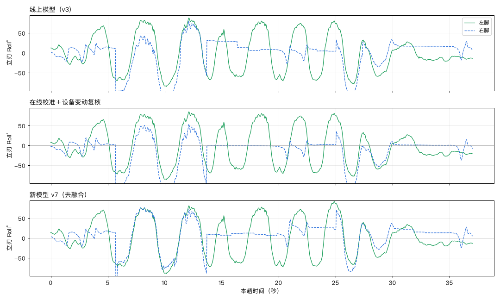
第 19 趟
线上模型（v3）前刃 100.5°（5弯）后刃 7.2°（2弯）
在线校准＋设备变动复核前刃 20.3°（6弯）后刃 2.7°（2弯）
新模型 v7（去融合）前刃 4.4°（4弯）后刃 4.3°（4弯）
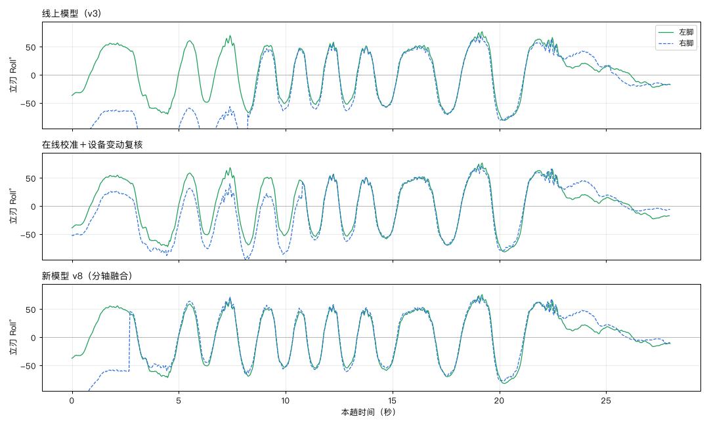
第 20 趟
线上模型（v3）前刃 2.4°（9弯）后刃 2.2°（7弯）
在线校准＋设备变动复核前刃 3.0°（10弯）后刃 2.6°（7弯）
新模型 v7（去融合）前刃 2.6°（10弯）后刃 3.3°（7弯）
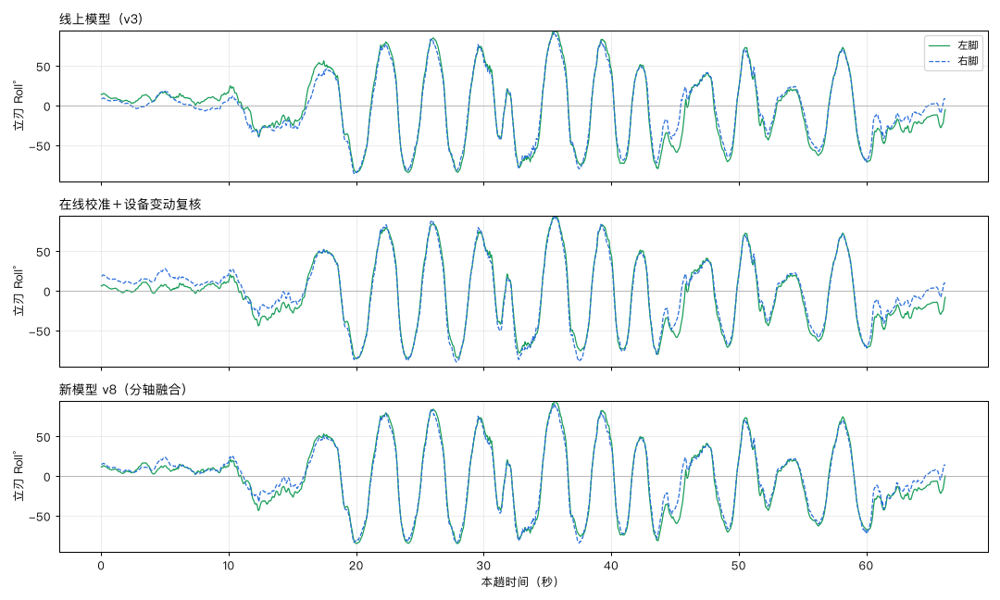
粒一
第 1 趟
线上模型（v3）前刃 9.9°（5弯）后刃 4.6°（4弯）
在线校准＋设备变动复核前刃 2.1°（4弯）后刃 4.5°（4弯）
新模型 v7（去融合）前刃 4.3°（5弯）后刃 3.2°（4弯）
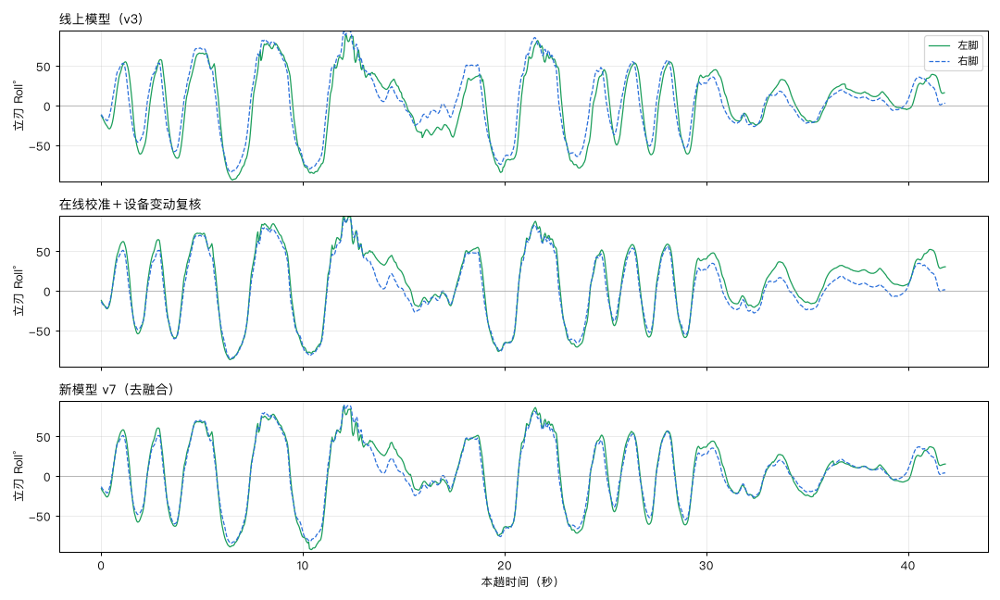
第 2 趟
线上模型（v3）前刃 10.9°（6弯）后刃 6.8°（6弯）
在线校准＋设备变动复核前刃 1.0°（5弯）后刃 2.0°（6弯）
新模型 v7（去融合）前刃 2.8°（5弯）后刃 2.2°（6弯）
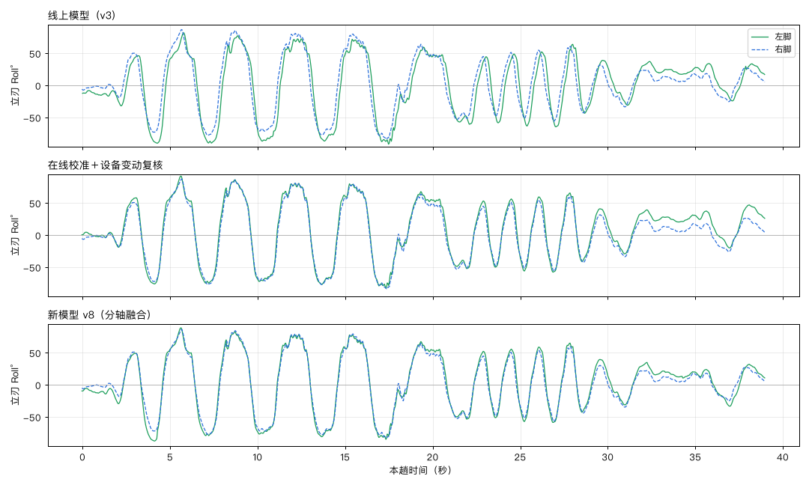
第 3 趟
线上模型（v3）前刃无大弯后刃无大弯
在线校准＋设备变动复核前刃无大弯后刃无大弯
新模型 v7（去融合）前刃无大弯后刃无大弯
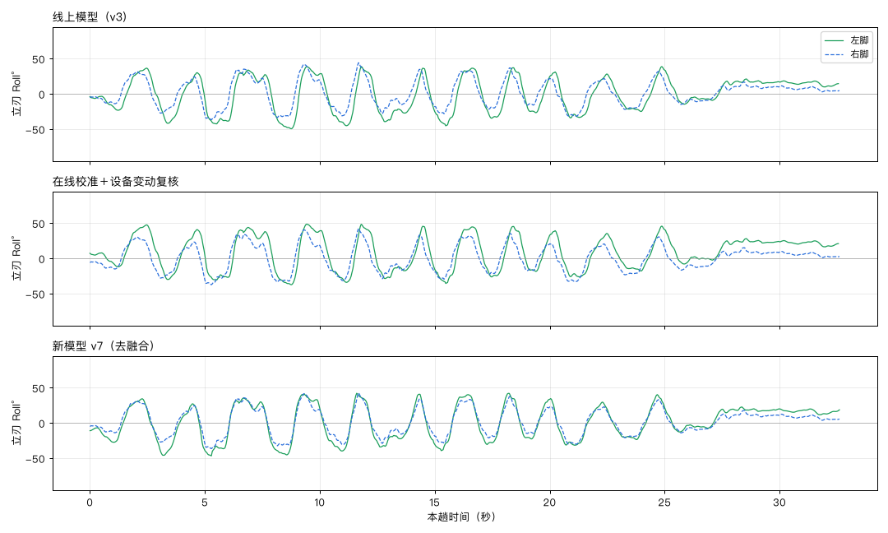
第 4 趟
线上模型（v3）前刃 6.3°（6弯）后刃 4.9°（6弯）
在线校准＋设备变动复核前刃 4.2°（6弯）后刃 2.3°（6弯）
新模型 v7（去融合）前刃 2.9°（6弯）后刃 2.3°（6弯）
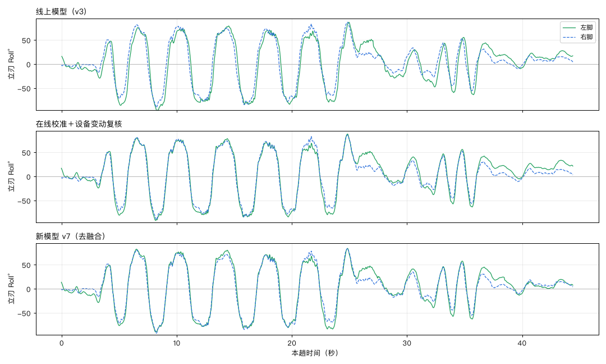
第 5 趟
线上模型（v3）前刃无大弯后刃无大弯
在线校准＋设备变动复核前刃无大弯后刃无大弯
新模型 v7（去融合）前刃无大弯后刃无大弯
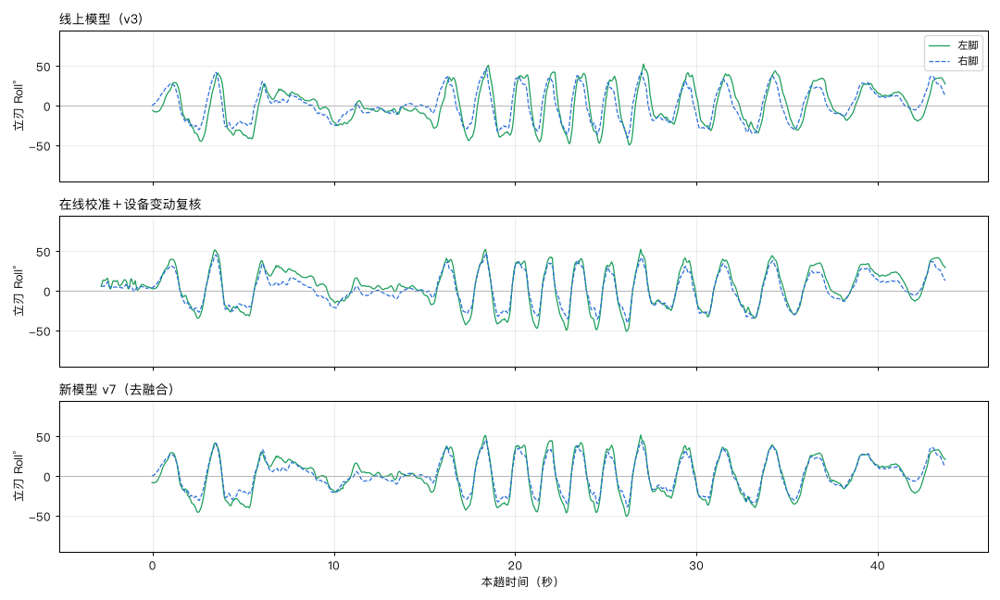
第 6 趟
线上模型（v3）前刃 7.6°（6弯）后刃 5.6°（6弯）
在线校准＋设备变动复核前刃 3.0°（6弯）后刃 2.2°（6弯）
新模型 v7（去融合）前刃 4.0°（6弯）后刃 1.6°（7弯）
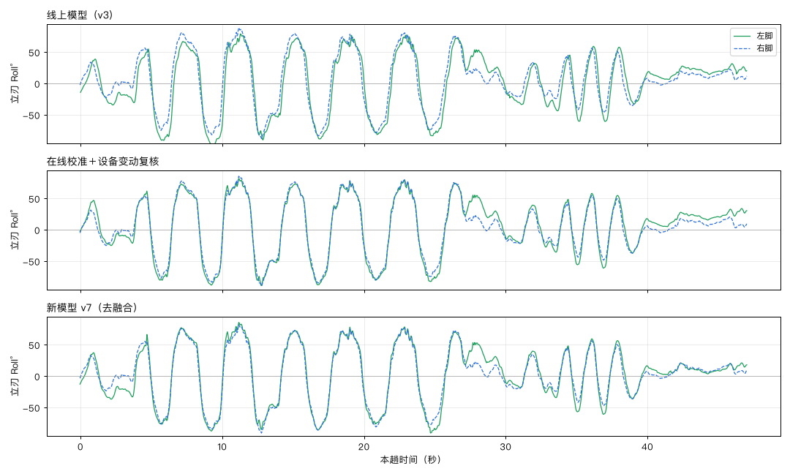
第 7 趟
线上模型（v3）前刃无大弯后刃无大弯
在线校准＋设备变动复核前刃无大弯后刃无大弯
新模型 v7（去融合）前刃无大弯后刃无大弯
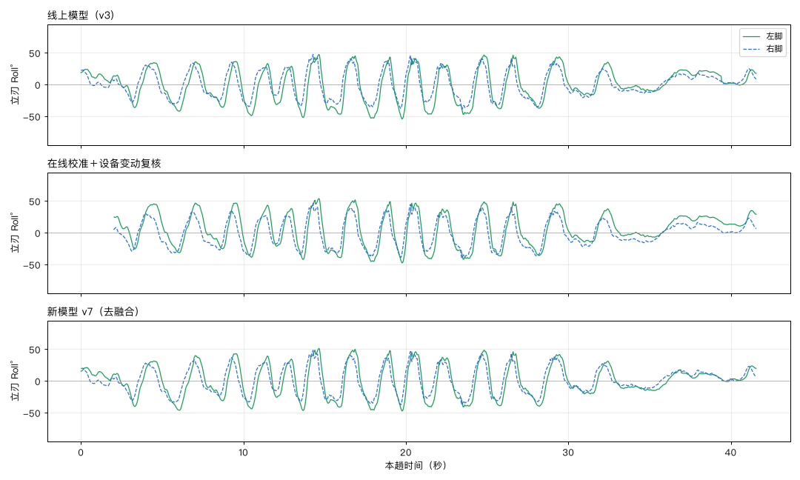
第 8 趟
线上模型（v3）前刃 17.8°（3弯）后刃 2.5°（3弯）
在线校准＋设备变动复核前刃 2.7°（1弯）后刃 8.2°（4弯）
新模型 v7（去融合）前刃 11.1°（2弯）后刃 6.9°（4弯）
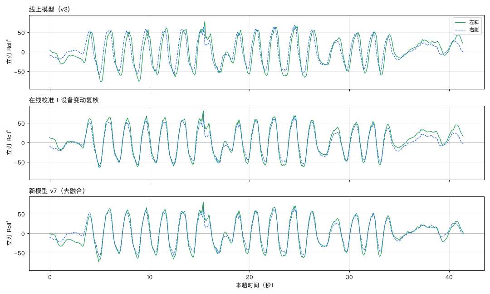
第 9 趟
线上模型（v3）前刃无大弯后刃无大弯
在线校准＋设备变动复核前刃无大弯后刃无大弯
新模型 v7（去融合）前刃无大弯后刃无大弯
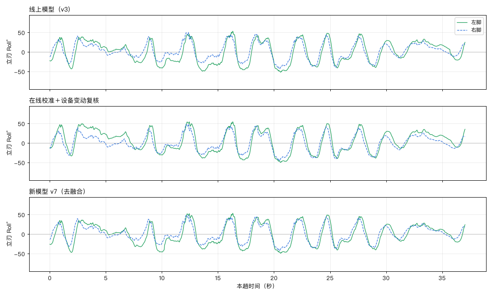
第 10 趟
线上模型（v3）前刃 15.3°（6弯）后刃 3.2°（5弯）
在线校准＋设备变动复核前刃 6.3°（4弯）后刃 5.2°（10弯）
新模型 v7（去融合）前刃 8.7°（5弯）后刃 4.6°（7弯）
第 11 趟
线上模型（v3）前刃无大弯后刃 5.5°（1弯）
在线校准＋设备变动复核前刃无大弯后刃 1.6°（1弯）
新模型 v7（去融合）前刃无大弯后刃无大弯
嘉嘉
第 1 趟
线上模型（v3）前刃 2.4°（5弯）后刃无大弯
在线校准＋设备变动复核前刃 5.4°（4弯）后刃 1.3°（1弯）
新模型 v7（去融合）前刃 2.9°（5弯）后刃无大弯
第 2 趟
线上模型（v3）前刃 0.7°（4弯）后刃 5.2°（5弯）
在线校准＋设备变动复核前刃 3.9°（5弯）后刃 2.5°（4弯）
新模型 v7（去融合）前刃 2.3°（4弯）后刃 2.1°（5弯）
第 3 趟
线上模型（v3）前刃 3.6°（7弯）后刃 3.6°（3弯）
在线校准＋设备变动复核前刃 1.7°（8弯）后刃 3.1°（3弯）
新模型 v7（去融合）前刃 2.0°（7弯）后刃 7.7°（3弯）
第 4 趟
线上模型（v3）前刃 3.1°（8弯）后刃 5.0°（7弯）
在线校准＋设备变动复核前刃 3.9°（8弯）后刃 2.5°（7弯）
新模型 v7（去融合）前刃 1.7°（8弯）后刃 3.8°（7弯）
第 5 趟
线上模型（v3）前刃 1.2°（3弯）后刃 3.4°（4弯）
在线校准＋设备变动复核前刃 3.6°（3弯）后刃 3.7°（4弯）
新模型 v7（去融合）前刃 1.3°（3弯）后刃 3.7°（4弯）
第 6 趟
线上模型（v3）前刃 2.1°（7弯）后刃 4.3°（3弯）
在线校准＋设备变动复核前刃 1.9°（6弯）后刃 2.7°（4弯）
新模型 v7（去融合）前刃 2.6°（7弯）后刃 2.3°（4弯）
第 7 趟
线上模型（v3）前刃 2.1°（5弯）后刃 1.3°（1弯）
在线校准＋设备变动复核前刃 3.1°（5弯）后刃 1.9°（2弯）
新模型 v7（去融合）前刃 1.0°（5弯）后刃 4.9°（2弯）
第 8 趟
线上模型（v3）前刃 2.3°（4弯）后刃 7.7°（3弯）
在线校准＋设备变动复核前刃 2.8°（7弯）后刃 6.8°（2弯）
新模型 v7（去融合）前刃 1.5°（4弯）后刃 7.6°（3弯）
Vacant小星
第 1 趟
线上模型（v3）前刃无大弯后刃无大弯
在线校准＋设备变动复核前刃无大弯后刃无大弯
新模型 v7（去融合）前刃无大弯后刃无大弯
第 2 趟
线上模型（v3）前刃无大弯后刃无大弯
在线校准＋设备变动复核前刃无大弯后刃无大弯
新模型 v7（去融合）前刃无大弯后刃无大弯
第 3 趟
线上模型（v3）前刃无大弯后刃无大弯
在线校准＋设备变动复核前刃无大弯后刃无大弯
新模型 v7（去融合）前刃无大弯后刃无大弯
第 4 趟
线上模型（v3）前刃无大弯后刃无大弯
在线校准＋设备变动复核前刃无大弯后刃无大弯
新模型 v7（去融合）前刃无大弯后刃无大弯
第 5 趟
线上模型（v3）前刃 5.7°（1弯）后刃 0.6°（1弯）
在线校准＋设备变动复核前刃 4.4°（1弯）后刃 1.5°（1弯）
新模型 v7（去融合）前刃 5.6°（1弯）后刃 2.3°（1弯）
第 6 趟
线上模型（v3）前刃 1.9°（1弯）后刃 5.1°（1弯）
在线校准＋设备变动复核前刃 0.7°（1弯）后刃 3.6°（1弯）
新模型 v7（去融合）前刃 1.7°（1弯）后刃 5.0°（1弯）
第 7 趟
线上模型（v3）前刃无大弯后刃无大弯
在线校准＋设备变动复核前刃无大弯后刃无大弯
新模型 v7（去融合）前刃无大弯后刃无大弯
第 8 趟
线上模型（v3）前刃 0.5°（1弯）后刃无大弯
在线校准＋设备变动复核前刃 5.7°（1弯）后刃 3.8°（1弯）
新模型 v7（去融合）前刃 4.1°（1弯）后刃无大弯
第 9 趟
线上模型（v3）前刃 5.7°（1弯）后刃无大弯
在线校准＋设备变动复核前刃 5.0°（1弯）后刃无大弯
新模型 v7（去融合）前刃 4.7°（1弯）后刃无大弯
第 10 趟
线上模型（v3）前刃无大弯后刃无大弯
在线校准＋设备变动复核前刃无大弯后刃无大弯
新模型 v7（去融合）前刃无大弯后刃无大弯
第 11 趟
线上模型（v3）前刃无大弯后刃无大弯
在线校准＋设备变动复核前刃无大弯后刃无大弯
新模型 v7（去融合）前刃无大弯后刃无大弯
第 12 趟
线上模型（v3）前刃无大弯后刃无大弯
在线校准＋设备变动复核前刃无大弯后刃无大弯
新模型 v7（去融合）前刃无大弯后刃无大弯
第 13 趟
线上模型（v3）前刃 8.8°（1弯）后刃无大弯
在线校准＋设备变动复核前刃 6.9°（1弯）后刃无大弯
新模型 v7（去融合）前刃 9.8°（1弯）后刃无大弯
第 14 趟
线上模型（v3）前刃无大弯后刃 0.9°（1弯）
在线校准＋设备变动复核前刃无大弯后刃 3.0°（1弯）
新模型 v7（去融合）前刃无大弯后刃 2.8°（1弯）
第 15 趟
线上模型（v3）前刃无大弯后刃无大弯
在线校准＋设备变动复核前刃无大弯后刃无大弯
新模型 v7（去融合）前刃无大弯后刃无大弯
第 16 趟
线上模型（v3）前刃无大弯后刃无大弯
在线校准＋设备变动复核前刃无大弯后刃无大弯
新模型 v7（去融合）前刃无大弯后刃无大弯
第 17 趟
线上模型（v3）前刃 5.8°（1弯）后刃 0.8°（1弯）
在线校准＋设备变动复核前刃 5.5°（1弯）后刃 6.5°（2弯）
新模型 v7（去融合）前刃 10.1°（1弯）后刃 6.4°（2弯）
第 18 趟
线上模型（v3）前刃无大弯后刃无大弯
在线校准＋设备变动复核前刃无大弯后刃无大弯
新模型 v7（去融合）前刃无大弯后刃无大弯
第 19 趟
线上模型（v3）前刃无大弯后刃无大弯
在线校准＋设备变动复核前刃无大弯后刃无大弯
新模型 v7（去融合）前刃无大弯后刃无大弯
第 20 趟
线上模型（v3）前刃 1.0°（2弯）后刃无大弯
在线校准＋设备变动复核前刃 1.6°（2弯）后刃无大弯
新模型 v7（去融合）前刃 1.2°（2弯）后刃无大弯
第 21 趟
线上模型（v3）前刃 1.1°（1弯）后刃 3.7°（2弯）
在线校准＋设备变动复核前刃 5.8°（1弯）后刃 7.4°（2弯）
新模型 v7（去融合）前刃 3.0°（1弯）后刃 1.6°（2弯）
第 22 趟
线上模型（v3）前刃无大弯后刃无大弯
在线校准＋设备变动复核前刃无大弯后刃无大弯
新模型 v7（去融合）前刃无大弯后刃无大弯
第 23 趟
线上模型（v3）前刃无大弯后刃无大弯
在线校准＋设备变动复核前刃无大弯后刃无大弯
新模型 v7（去融合）前刃无大弯后刃无大弯
第 24 趟
线上模型（v3）前刃 28.0°（1弯）后刃 1.5°（1弯）
在线校准＋设备变动复核前刃 10.6°（3弯）后刃 0.0°（1弯）
新模型 v7（去融合）前刃 19.7°（2弯）后刃 0.8°（1弯）
Lychee
第 1 趟
线上模型（v3）前刃无大弯后刃无大弯
在线校准＋设备变动复核前刃无大弯后刃无大弯
新模型 v7（去融合）前刃无大弯后刃无大弯
第 2 趟
线上模型（v3）前刃 12.6°（1弯）后刃 1.2°（1弯）
在线校准＋设备变动复核前刃 29.2°（1弯）后刃 3.4°（1弯）
新模型 v7（去融合）前刃 10.9°（1弯）后刃 9.9°（1弯）
第 3 趟
线上模型（v3）前刃无大弯后刃无大弯
在线校准＋设备变动复核前刃无大弯后刃无大弯
新模型 v7（去融合）前刃无大弯后刃无大弯
第 4 趟
线上模型（v3）前刃无大弯后刃无大弯
在线校准＋设备变动复核前刃无大弯后刃无大弯
新模型 v7（去融合）前刃无大弯后刃无大弯
第 5 趟
线上模型（v3）前刃无大弯后刃无大弯
在线校准＋设备变动复核前刃无大弯后刃无大弯
新模型 v7（去融合）前刃无大弯后刃无大弯